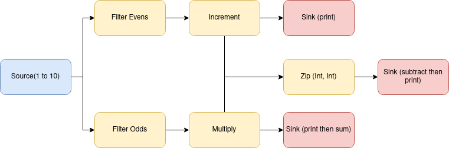
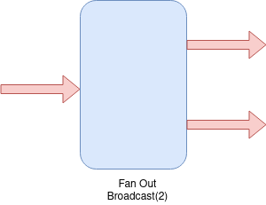
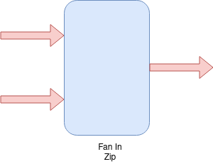
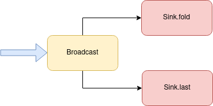
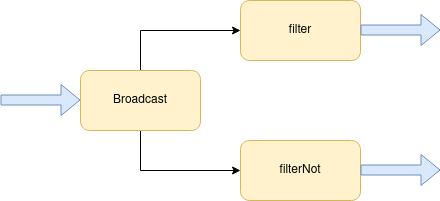
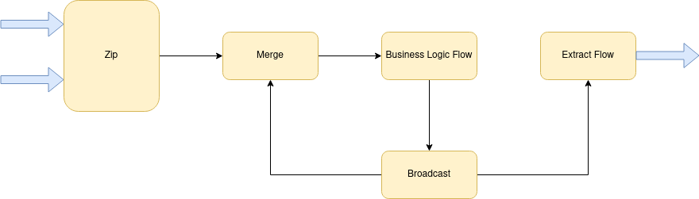
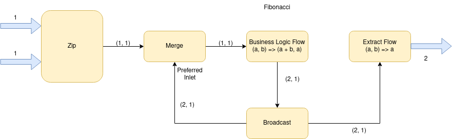
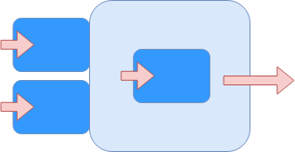
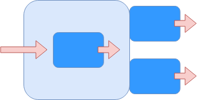
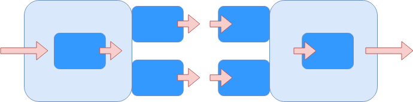

class: center, middle # Akka Streams - Advanced Brennan Holten @47deg ??? Questions any time --- ### Agenda 1. Graph DSL 2. Custom Graph Shapes 3. Graph Cycles 4. Custom Graph Stages 5. Wrap Up: Dynamic Graphs --- class: center, middle # Graph DSL --- ### Graph DSL - Dataflow - Non-linear components - Cycle (feedback loops) --- ### Basic Graphs - GraphDSL is a superset of the regular DSL - Recall our previous example: ```scala val numbers = Source(1 to 10) val double = Flow[Int].map(_ * 2) val sum = Sink.fold(0)((acc: Int, next: Int) => acc + next) def eventuallyResult: Future[Int] = numbers.via(double).runWith(sum) ``` --- ### Basic Graphs ```scala val numbers = Source(1 to 10) val double = Flow[Int].map(_ * 2) val sum = Sink.fold(0)((acc: Int, next: Int) => acc + next) def eventuallyResult: Future[Int] = numbers.via(double).runWith(sum) ``` ```scala GraphDSL.create() { implicit builder => // MUTABLE builder import GraphDSL.Implicits._ // imports syntax: ~>, <~ // MUST return a shape (SourceShape, FlowShape, ClosedShape, etc.) } // whole expression returns a "Graph" ``` --- ### Basic Graphs ```scala val numbers = Source(1 to 10) val double = Flow[Int].map(_ * 2) val sum = Sink.fold(0)((acc: Int, next: Int) => acc + next) def eventuallyResult: Future[Int] = numbers.via(double).runWith(sum) ``` ```scala GraphDSL.create() { implicit builder => import GraphDSL.Implicits._ numbers ~> double ~> sum ClosedShape } ``` --- ### Basic Graphs - How do we run it? ```scala val numbers = Source(1 to 10) val double = Flow[Int].map(_ * 2) val sum = Sink.fold(0)((acc: Int, next: Int) => acc + next) def eventuallyResult: Future[Int] = numbers.via(double).runWith(sum) ``` ```scala def graphDsl: RunnableGraph[NotUsed] = RunnableGraph.fromGraph( GraphDSL.create() { implicit builder => import GraphDSL.Implicits._ numbers ~> double ~> sum ClosedShape } ) val result: NotUsed = graphDsl.run() ``` --- ### Basic Graphs - Problem: where did the materialized value go? - We need to _forward_ the sink into the Graph builder --- ### Basic Graphs - We need to _forward_ the sink into the Graph builder ```scala def graphDsl: RunnableGraph[NotUsed] = RunnableGraph.fromGraph( GraphDSL.create() { implicit builder => import GraphDSL.Implicits._ numbers ~> double ~> sum ClosedShape } ) ``` ```scala def graphDsl: RunnableGraph[Future[Int]] = RunnableGraph.fromGraph( GraphDSL.createGraph(sum) { implicit builder => sumShape => { import GraphDSL.Implicits._ numbers ~> double ~> sumShape ClosedShape } } ) ``` --- ### Basic Graphs - What is really going on? - Shapes have `inlets` and `outlets` - Implicits/builder is doing some automatic conversion of the `numbers`, `double`, etc. shapes - `inlets` are connected to `outlets` ```scala def graphDsl: RunnableGraph[Future[Int]] = RunnableGraph.fromGraph( GraphDSL.createGraph(sum) { implicit builder => sumShape => { import GraphDSL.Implicits._ val input = builder.add(numbers) val doubler = builder.add(double) // format: OFF input.out ~> doubler.in doubler.out ~> sumShape.in // format: ON ClosedShape } } ) ``` --- ### Non-linear components - `Source`, `Flow`, and `Sinks` are defined by the _number of inlets and outlets_ - Recall: - `Source` = 0 inlet, 1 outlet - `Flow` = 1 inlet, 1 outlet - `Sink` = 1 inlet, 0 outlet - What if we want more flexibility? Ex 2 inlets, `n` outlets, etc? - How would we make something like this?  --- ### GraphDSL Example ```scala // Source: val input = Source(1 to 10) // Flows: val evens = Flow[Int].filter(_ % 2 == 0) val odds = Flow[Int].filterNot(_ % 2 == 0) val incrementer = Flow[Int].map(_ + 1) val multiplier = Flow[Int].map(_ * 10) // Sinks: val printer = Sink.foreach[Int](println) val sum = Sink.fold[Int, Int](0) { (acc, next) => println(s"Summing: $acc + $next") acc + next } ``` ```scala GraphDSL.create() { implicit builder => // MUTABLE builder import GraphDSL.Implicits._ // imports syntax: ~>, <~ // MUST return a shape (SourceShape, FlowShape, ClosedShape, etc.) } // whole expression returns a "Graph" ``` --- ### Broadcast - Fan out operator - Broadcasts every element to its outputs  --- ### Zip - Fan in operator - Combines elements from each input into tuples  --- ### Graph DSL Example - Add the `Broadcast`s and `Zip` with the builder ```scala GraphDSL.create() { implicit builder => import GraphDSL.Implicits._ // Broadcast for the filter: val bcast = builder.add(Broadcast[Int](2)) // Broadcast after the incrementer val iBcast = builder.add(Broadcast[Int](2)) // Broadcast after the multiplier val mBcast = builder.add(Broadcast[Int](2)) // Zip together both incrementer and multiplier val zip = builder.add(Zip[Int, Int]()) ClosedShape } ``` --- ### Graph DSL Example - Hook up the rest of the components ```scala GraphDSL.create() { implicit builder => import GraphDSL.Implicits._ val bcast = builder.add(Broadcast[Int](2)) val iBcast = builder.add(Broadcast[Int](2)) val mBcast = builder.add(Broadcast[Int](2)) val zip = builder.add(Zip[Int, Int]()) // format: OFF input ~> bcast.in bcast.out(0) ~> evens ~> incrementer ~> iBcast.in iBcast.out(0) ~> printer iBcast.out(1) ~> zip.in0 bcast.out(1) ~> odds ~> multiplier ~> mBcast.in mBcast.out(0) ~> sum mBcast.out(1) ~> zip.in1 zip.out ~> subtractThenPrint // format: ON ClosedShape } ``` --- class: middle ```scala input ~> bcast.in bcast.out(0) ~> evens ~> incrementer ~> iBcast.in iBcast.out(0) ~> printer iBcast.out(1) ~> zip.in0 bcast.out(1) ~> odds ~> multiplier ~> mBcast.in mBcast.out(0) ~> sum mBcast.out(1) ~> zip.in1 zip.out ~> subtractThenPrint ``` --- ### Shapes - `SourceShape` -- emit elements - `SinkShape` -- consume elements - `FlowShape` -- emit and consume elements - `ClosedShape` -- does not emit and does not consume --- ### Materializing Values - This is a very common scenario - How do you get to keep the materialized values?  --- ### Solution - Create custom `Sink` using `SinkShape` - Use the `inlet` of the `Broadcast` - Use `createGraph` in order to forward the materialized values - `createGraph` takes a by-name parameter `combineMat`, which is a function that gives how to combine the materialized values if you have multiple Documentation states: ```scala /** * Creates a new Graph by importing the given graphs and passing their Shapes * along with the GraphDSL.Builder to the given create function. */ def createGraph(...) ``` --- ### Solution ```scala val sum: Sink[Int, Future[Int]] = Sink.fold[Int, Int](0)((acc, next) => acc + next) val last: Sink[Int, Future[Int]] = Sink.last[Int] val dualSink: Sink[Int, Future[(Int, Int)] = { Sink.fromGraph( GraphDSL.createGraph(sum, last)(combineMat = (a, b) => a.zip(b)) { implicit builder => (sumShape, lastShape) => { import GraphDSL.Implicits._ val bCast = builder.add(Broadcast[Int](2)) bCast.out(0) ~> sumShape bCast.out(1) ~> lastShape SinkShape(bCast.in) } } ) } ``` --- ```scala val bCast = builder.add(Broadcast[Int](2)) bCast.out(0) ~> sumShape bCast.out(1) ~> lastShape SinkShape(bCast.in) ``` --- class: center, middle # Custom Graph Shapes --- ### Example: Filter - Very common situation - You want to conditionally route elements of type `A` depending on some function, `A => Boolean` - Two ways to implement this: 1. Custom Graph Shape 2. Custom Operator (will do later)  - Will have one inlet, and two outlets (for true and false) --- ### Example: Filter ```scala GraphDSL.create() { implicit builder => import GraphDSL.Implicits._ val bCast = builder.add(Broadcast[T](2)) val filter = builder.add(Flow[T].filter(fn)) val filterNot = builder.add(Flow[T].filterNot(fn)) bCast.out(0) ~> filter bCast.out(1) ~> filterNot ??? // What do we do here? } ``` --- ### Example: Filter - Define our own shape - implement `akka.stream.Shape` ```scala case class Filter[T](in: Inlet[T], whenTrue: Outlet[T], whenFalse: Outlet[T]) extends Shape { override val inlets: Seq[Inlet[T]] = List(in) override val outlets: Seq[Outlet[T]] = List(whenTrue, whenFalse) override def deepCopy(): Shape = Filter(in.carbonCopy(), whenTrue.carbonCopy(), whenFalse.carbonCopy()) } ``` --- ### Example: Filter - Override the `apply` method to create the `Graph` ```scala object Filter { def apply[T](fn: T => Boolean): Graph[Filter[T], NotUsed] = GraphDSL.create() { implicit builder => import GraphDSL.Implicits._ val bCast = builder.add(Broadcast[T](2)) val filter = builder.add(Flow[T].filter(fn)) val filterNot = builder.add(Flow[T].filterNot(fn)) bCast.out(0) ~> filter bCast.out(1) ~> filterNot Filter(bCast.in, filter.out, filterNot.out) } } ``` --- ### Example: Filter - You can now use it like a normal graph shape ```scala val source = Source(1 to 100) val evenSink = Sink.foreach[Int](n => println(s"Even $n")) val oddSink = Sink.foreach[Int](n => println(s"Odd: $n")) val graph = RunnableGraph.fromGraph( GraphDSL.create() { implicit builder => import GraphDSL.Implicits._ val filter = builder.add(Filter[Int]((n: Int) => n % 2 == 0)) // format: OFF source ~> filter.in filter.whenTrue ~> evenSink filter.whenFalse ~> oddSink // format: ON ClosedShape } ) ``` --- class: center, middle # Graph Cycles, Feedback --- ### Cycles - Main idea: what if we _back feed_ elements backwards in our graph - Useful for building state, conditionally back-routing elements through retries, etc. - Example:  --- ### Cycle Example: Fibonacci - Believe it or not, Fibonacci can be easily implemented with cycles  --- ### Cycle Example: Fibonacci - Must use `MergePreferred` to avoid deadlock ```scala val fibonacciGraph: Graph[UniformFanInShape[BigInt, BigInt], NotUsed] = GraphDSL.create() { implicit builder => import GraphDSL.Implicits._ val zip = builder.add(Zip[BigInt, BigInt]()) val merge = builder.add(MergePreferred[(BigInt, BigInt)](1)) val fib = builder.add(Flow[(BigInt, BigInt)].map { case (a, b) => (a + b, a) }) val bcast = builder.add(Broadcast[(BigInt, BigInt)](2)) val extract = builder.add(Flow[(BigInt, BigInt)].map(_._1)) // format: OFF zip.out ~> merge ~> fib ~> bcast ~> extract merge.preferred <~ bcast // format: ON UniformFanInShape(extract.out, zip.in0, zip.in1) } ``` --- ### Cycle Example: Fibonacci ```scala val fibonacci: RunnableGraph[NotUsed] = RunnableGraph.fromGraph( GraphDSL.create() { implicit builder => import GraphDSL.Implicits._ val a = builder.add(Source.single[BigInt](1)) val b = builder.add(Source.single[BigInt](1)) val f = builder.add(fibonacciGraph) val sink = Sink.foreach[BigInt] { n => Thread.sleep(500) println(n) } // format: OFF a ~> f.in(0) b ~> f.in(1) f.out ~> sink // format: ON ClosedShape } ) ``` --- ### Cycle Example: Fibonacci ```scala zip.out ~> merge ~> fib ~> bcast ~> extract merge.preferred <~ bcast ``` --- class: center, middle # Custom Graph Stages --- ### Graph Stages - Lower-level than GraphDSL - Able to create powerful primitives and shapes - `Merge`, `MergeHub`, `MergePreferred`, `Zip`, etc. are implemented using this --- ### Simple Graph Stage Example - Source that emits random numbers - Implement `GraphStage` parameterized by the `Shape` ```scala class RandomSource extends GraphStage[SourceShape[Int]] { override def shape: SourceShape[Int] = ??? override def createLogic(inheritedAttributes: Attributes): GraphStageLogic = ??? } ``` --- ### Simple Graph Stage Example ```scala class RandomSource extends GraphStage[SourceShape[Int]] { val out: Outlet[Int] = Outlet("RandomSource") private val random = new Random() // Shape of our custom stage override def shape: SourceShape[Int] = SourceShape(out) // Implement logic here override def createLogic(inheritedAttributes: Attributes): GraphStageLogic = new GraphStageLogic(shape) { // GraphStageLogic has several handlers setHandler(out, new OutHandler { // called with demand downstream override def onPull(): Unit = { val nextNum = random.nextInt() push(out, nextNum) } }) } } ``` --- ### Filter Revisited - Recall: we implemented a filter using the Graph DSL --- ### Filter Revisited - Demo --- ### GraphStage Summary - Implement the `GraphStage` trait ```scala class RandomSource extends GraphStage[SourceShape[Int]] { override def shape: SourceShape[Int] = ??? override def createLogic(inheritedAttributes: Attributes): GraphStageLogic = ??? } ``` - Implement `GraphStageLogic` - Attach `Handlers` to our input and output ports - Any state within the `GraphStageLogic` is safe --- ### GraphStage Summary - Output Ports - Methods - `push(out,elem)` pushes an element to the output port. Only possible after the port has been pulled by downstream. - `complete(out)` closes the output port normally. - `fail(out,exception)` closes the port with a failure signal. - Handlers - `onPull()` called when the output port is ready to emit the next element - `onDownstreamFinish()` is called once the downstream has cancelled and no longer allows messages to be pushed to it --- ### GraphStage Summary - Input Ports - Methods - `pull(in)` requests a new element from an input port. This is only possible after the port has been pushed by upstream. - `grab(in)` acquires the element that has been received during an onPush(). It cannot be called again until the port is pushed again by the upstream. - `cancel(in)` closes the input port. - Handlers - `onPush()` is called when the input port has now a new element. - `onUpstreamFinish()` is called once the upstream has completed and no longer can be pulled for new elements. - `onUpstreamFailure()` is called if the upstream failed with an exception and no longer can be pulled for new elements. --- class: center, middle # Dynamic Graphs --- ### Dynamic Graphs - `Killswitch` to terminate graph stages - `MergeHub` and `BroadcastHub` to dynamically add inlets and outlets - Implemented by _materializing a new source/sink_ and running that --- ### `Killswitch` ```scala val numbers = Source(LazyList.from(1)) val killSwitch = KillSwitches.single[Int] val sink = Sink.foreach[Int](println) val switch: UniqueKillSwitch = numbers .viaMat(killSwitch)(Keep.right) .to(sink) .run() system.scheduler.scheduleOnce(3.seconds) { switch.shutdown() } ``` --- ### `MergeHub` - A `Source` that materializes a `Sink` (!!!) - Allows us to dynamically create inlets ```scala val merge: Source[Int, Sink[Int, NotUsed]] = MergeHub.source[Int] val sink: Sink[Int, NotUsed] = merge.to(Sink.foreach[Int](println)).run() Source(1 to 10).runWith(sink) ``` --- ### `MergeHub`  --- ### `BroadcastHub` - Converse of `MergeHub` - A `Sink` that materializes a `Source` ```scala val broadcast: Sink[Int, Source[Int, NotUsed]] = BroadcastHub.sink[Int] val source: Source[Int, NotUsed] = Source(1 to 10).runWith(broadcast) source.runWith(Sink.foreach[Int](println)) ``` --- ### `BroadcastHub`  --- ### Combining `Mergehub` and `BroadcastHub` - Combining these can create simple pub/sub ```scala val merge = MergeHub.source[String] val bcast = BroadcastHub.sink[String] // publisher: Sink[String, NotUsed] // subscriber: Source[String, NotUsed] val (publisher, subscriber) = merge.toMat(bcast)(Keep.both).run() subscriber.runWith(Sink.foreach(e => println(s"Subscriber: $e"))) subscriber.map(_.length).runWith(Sink.foreach(n => println(s"Number: $n"))) Source(List("Chicago", "Seattle", "Miami")).runWith(publisher) Source(List("A", "B", "C")).runWith(publisher) ``` --- ### `BroadcastHub` -> `MergeHub` PubSub  --- ### Topics Not Covered - Best practices - Application structure, architecture - Flows across cluster nodes -- `StreamRef` --- class: center, middle # Thanks! Code and slides at `bholten/mdoc-presentations` on GitHub ## Questions?